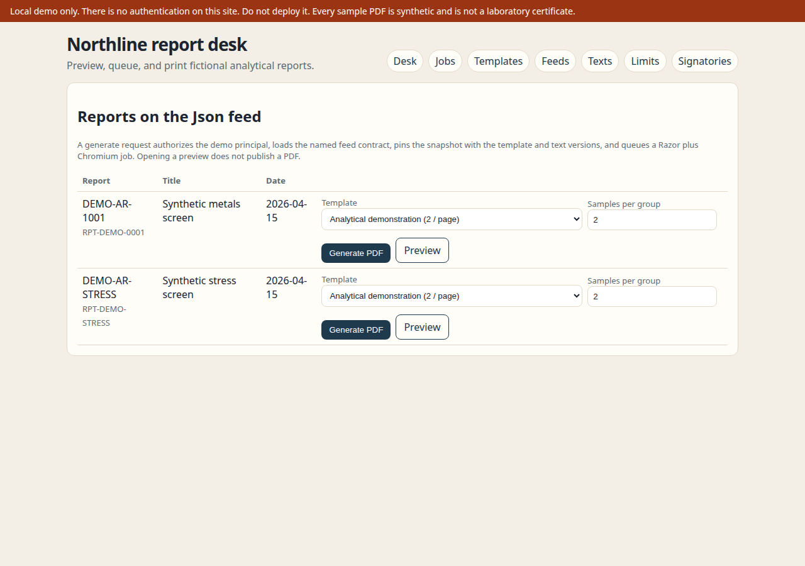
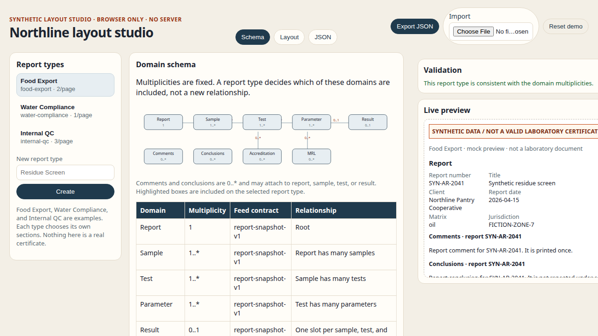
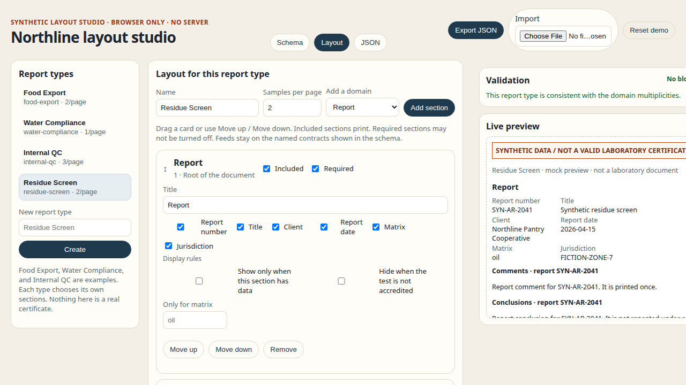
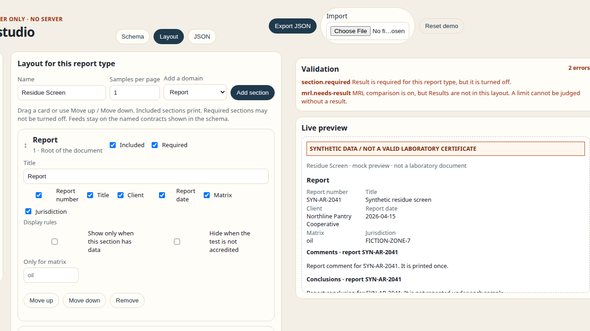
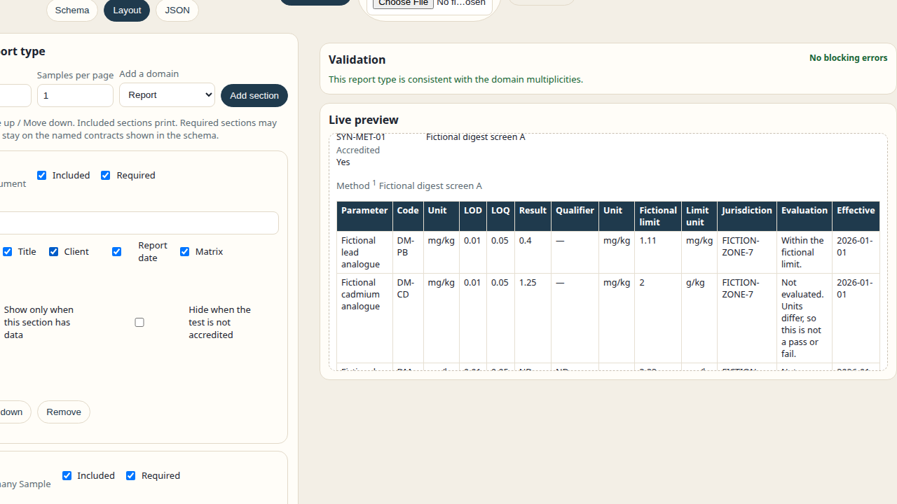

What we tried to achieve
You asked me to study public laboratory-style analytical PDFs, understand how shops that rely on SSRS publish them, and propose a better, cheaper, easy path — then prove it with a mocked Razor HTML + Playwright prototype and an admin UI for layout permutations.
- Keep legal publication credible (immutable snapshots, hashes, scoped text, no silent reprint drift).
- Make new sections (for example MRL) addable without rewriting the world — whitelist handlers + admin config.
- Handle multi-sample pagination, comments/conclusions/disclaimers with text references, and safe signatures.
- Expose data through named SQL contracts so anyone who needs a report can pull a frozen snapshot easily.
- Give admins a JS mock to define permutations across Report, Sample, Tests, Parameters, Results, Comments, Conclusions, MRL, and Accreditation.
The problem with SSRS (in this context)
SSRS (often with URL-access PDF export) is a known quantity for many labs. It is not “bad.” The pain shows up when layouts become highly dynamic: optional sections per report type, multi-sample grouping, versioned legal wording, and MRL-style comparisons. RDL maintenance cost climbs, and admins cannot safely invent new visual blocks without a developer cycle anyway.
I did not prove that any specific public Eurofins PDF was produced by SSRS. Public method catalogs and one metadata preview informed structure; your premise that SSRS is the current production path was the product context.
Recommendation
Inexpensive options we weighed
| Option | Note |
|---|---|
| Razor + Playwright | Chosen for the working prototype. .NET MIT; Playwright Apache-2.0. HTML-first, familiar to web teams. |
| WeasyPrint | HTML/CSS → PDF without a browser. Fine for simpler print CSS; less Chromium fidelity for complex HTML. |
| QuestPDF | Code-first .NET PDF. Community License is conditional (check current terms). Not used here. |
| Paid report SaaS / designers | Skipped — you asked not to recommend expensive tools. |
Fuller notes: docs/research.md.
Architecture (report desk)
Admins reorder / enable / retitle whitelisted sections and set samples per group. Developers add new visual types (catalog + Razor partial). Feeds are named contracts — not free-form SQL. Signatures are registered blocks, not string replacement. Details: ARCHITECTURE.md.
What’s in this repository
| Path | Contents |
|---|---|
prototype/ | ASP.NET Core “Northline report desk” — Razor views, Playwright PDF jobs, admin pages, SQL scripts, tests. |
admin-mock/ | Static layout studio, plus a separate Nordic examples sandbox. localStorage only, and the two stores do not share a key. |
docs/nordic-layout-patterns.md | How the Nordic presets map onto Report, Sample, Tests, Parameters, Results, Comments, Conclusions, MRL, and Accreditation. Source links, no copied reports. |
docs/ | Research, copied prototype docs, sample-layout.json, sample PDFs. |
docs/sample-output/ | report-without-mrl.pdf, report-with-mrl.pdf, report-stress-test.pdf (+ extras). |
media/ | prototype-walkthrough.mp4, layout-studio-walkthrough.mp4. |
screenshots/ | UI captures embedded below. |
How to run
Report desk (Razor + Playwright)
cd prototype
dotnet run --project src/LabReport.Web --urls http://127.0.0.1:5891Needs .NET 10 SDK and Playwright Chromium (see prototype/README.md). Open http://127.0.0.1:5891. There is no login — local demo only.
Layout studio
python3 -m http.server 8766 --directory admin-mockOpen http://127.0.0.1:8766/. Or open admin-mock/index.html directly.
Nordic examples sandbox
On that same page, open the Nordic examples tab, or go to http://127.0.0.1:8766/#nordic. It is a separate sandbox: its own presets, its own localStorage key (northline-nordic-sandbox-v1), and it does not rewrite the studio document.
Five presets reuse one fictional snapshot. Controls change section visibility, vertical versus sample-column layout, sample count, samples per page (including more than four), parameter groups, and optional unit / LOQ / LOR / MU / method / reference / accreditation columns. Comments stay on the sample, test, or result that owns them. Report conclusions and the sign-off block are end-matter. Limits score only when unit, matrix, and jurisdiction match; a mismatch stays “not evaluated”.
pagination.pdf: false. See nordic-layout-patterns.md.
node admin-mock/selfcheck/run.mjsScreenshots





Honest limitations
- All data is mocked / synthetic. Every PDF carries a permanent banner: not a laboratory certificate.
- SQL scripts under
prototype/sql/were never run against a SQL Server in the build environment. Default feed is JSON. - Layout studio is localStorage only — no backend, no auth, no multi-user sync. The Nordic examples tab is a second key in the same browser, still with no backend.
- Nordic pagination is a simulated page stack (sample groups and row chunks). It is not a PDF and does not replace the report desk’s Playwright pagination.
- The prototype walkthrough video shows the desk UI; it does not open the generated PDFs on screen (download them from docs/sample-output/).
- No real identity provider, no cryptographic signing, no PDF/A, no durable external queue.
- Public Mizoram PDF returned HTTP 403 and was not used as a layout source.
Source inspection (what we actually opened)
See SOURCE-INSPECTION.md. Short version: Eurofins APAC method summaries PDF (structure only), Scribd metadata page 1 only, Mizoram unreachable (403). No logos, accreditation marks, or personal data were copied into the demo.